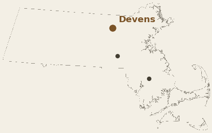
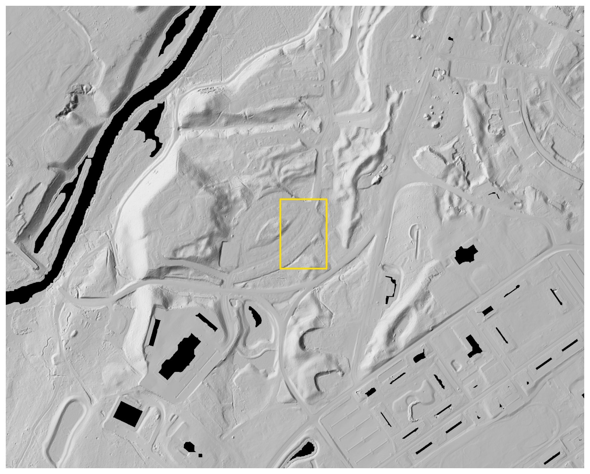
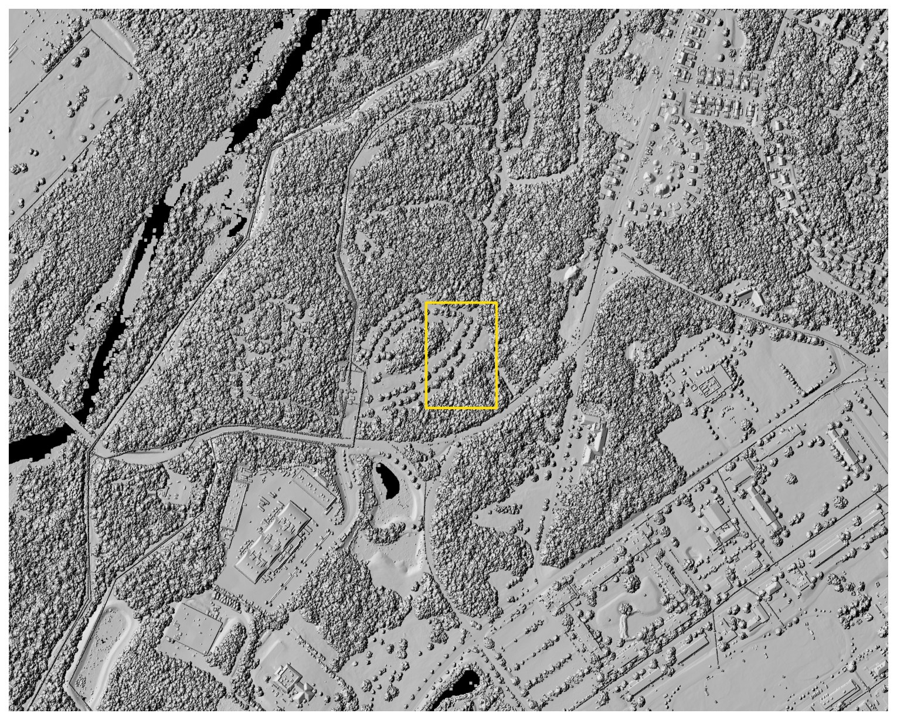
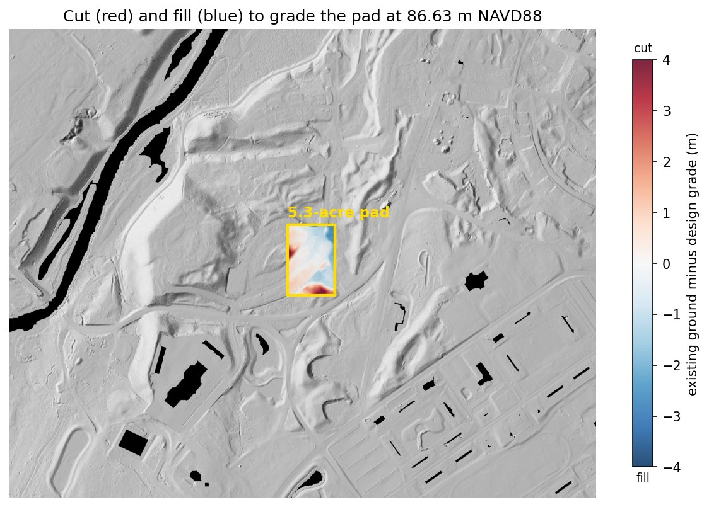
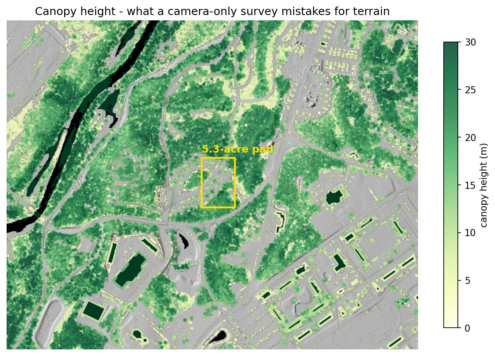
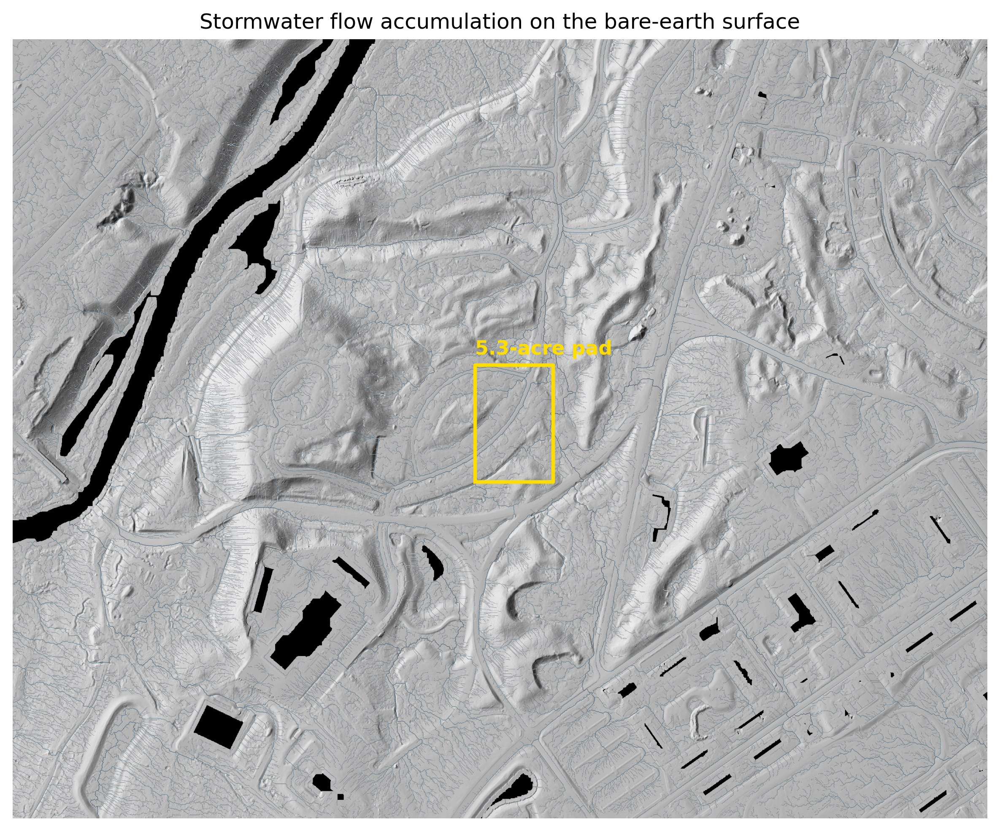
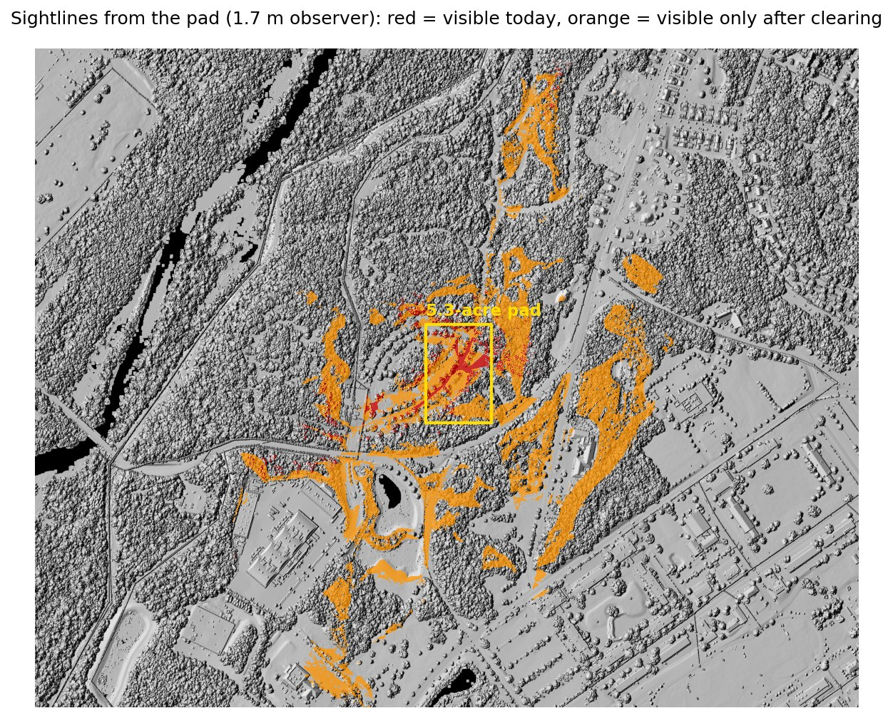

A camera maps the treetops.
Lidar maps the ground under them.
Camera-only mapping generally cannot produce a reliable bare-earth surface beneath closed canopy. LiDAR can recover much more of that terrain. This planning-level study tests the difference on the Devens parcel where Commonwealth Fusion Systems later built its campus, using one public LiDAR flight processed start to finish.

Scope: public-data demonstration for planning and comparison. It is not a survey, construction quantity, bid, or final grading design.
Drag the line
Left of the line is the treetop surface — what camera-only mapping is most likely to recover over closed forest. Right of it is the bare ground, recovered from laser returns that made it through gaps in the canopy. Same flight, same week, same points. The yellow rectangle is the building pad analyzed below.


One pad, three surfaces
The pad is 5.3 acres, matching the footprint of the building that now stands there. It was 65% forest when the lidar was flown, with trees up to 23 m. Grading it to a level 86.63 m requires:
| Surface used for the estimate | Cut | Fill | Total moved | @ $20 / yd³ |
|---|---|---|---|---|
| Lidar bare earth | 12,255 | 12,278 | 24,532 yd³ | $0.49M |
| Treetop surface (what photos give you) | 304,247 | 2,443 | 306,690 yd³ | $6.13M |
| 2011 state DEM (last free data before 2021) | 12,190 | 12,323 | 24,513 yd³ | $0.49M |
| Error carried by the photo surface | 282,158 yd³ | ≈ $5.64M | ||
A uniform ±10 cm vertical shift changes the modeled volume by ±2,827 yd³ ≈ ±$57k. This is a data-accuracy sensitivity—not a full construction contingency. Design, soils, rock, material handling, and field conditions can create larger changes.
To be fair about both comparisons: nobody would bid $6M off a treetop surface. The real problem is that on wooded land a camera-only model may not provide a reliable bare-earth surface — the estimate would have to come from another source, a site walk, or judgment instead. The old 2011 DEM happened to remain close here because this particular parcel sat untouched. Within the same study area, other spots moved as much as 7 m over that decade. There's no way to know which kind of parcel you have without measuring again.

More answers from the same flight
The earthwork number is the headline, but the same dataset answers a bunch of other early-stage questions:





The data landed 17 days after the project was announced
Commonwealth Fusion Systems announced its 47-acre Devens campus on March 3, 2021. The state lidar was flown March 20 – April 24, 2021, so the point cloud catches the parcel in its last weeks as forest. The pad above is where their largest building actually went. In other words: this is the analysis that could have been on the table before a single tree came down.

What this means for the deal
| Screening item | Estimate |
|---|---|
| Earthwork, graded to balance | $0.49M ± $57k |
| Clearing, 3.5 forested acres | $10–21k |
| Access | direct route crosses a 21% bank — contour the drive or regrade |
| Terrain-screening subtotal: modeled earthwork + clearing only | ≈ $0.51M + unresolved access work |
Not included: final grading design, topsoil, shrink/swell, unsuitable soils, rock, haul/disposal, retaining walls, utilities, stormwater construction, erosion control, mobilization, permitting, survey, or engineering.
This site is the validation case — the building is already there, so these are the numbers a buyer could have had before closing. The diligence items a purchase agreement would have wanted to cover:
- Wetland edge — the pad clears the mapped wetlands, but setback areas sit within the parcel; confirm buffers on the site plan.
- Vernal pools — depression screen found no candidates in or near the pad (3 state-mapped potential pools elsewhere in the study area); "screened, clear" with field confirmation at permitting.
- Professional control — any authoritative topographic, boundary, or construction quantity would require the appropriate licensed survey control, professional oversight, and project-specific specifications.
The numbers are checkable
- Data — USGS 3DEP lidar (2021 Central-Eastern Massachusetts, ~14–20 points/m², published accuracy 10 cm RMSE). 35.6 million points for this site.
- Processing — PDAL pipeline: ground/vegetation separation, 0.5 m ground model, treetop model, canopy heights. I also re-ran ground classification from scratch to confirm the workflow on raw, unclassified point clouds.
- Processing consistency — my ground model compared with the state-published DEM derived from the same flight: 5 mm average difference and 5.6 cm RMSE over open ground. That checks processing agreement, not independent field accuracy. One grid and one vertical datum (NAVD88, meters) were used across every surface.
- Volumes — cell-by-cell raster math, cross-checked with a second, independent implementation in QGIS. The two agree to 0.003%. Cost basis is an illustrative $20/yd³ screening assumption, shown with a $10–$40 sensitivity range; a real project would require current contractor or estimator input.
Public LiDAR includes published accuracy specifications, but these case-study values remain planning-level. Survey-grade or construction-facing work requires licensed control and project-specific professional oversight. Screens run for every project: terrain-wetness discrepancy, closed-depression / vernal-pool candidates, surface roughness. Also available: intensity analysis, contours to CAD, per-tree inventory. Scripts and pipeline files available on request. See the shared method, sources, assumptions, and limitations.